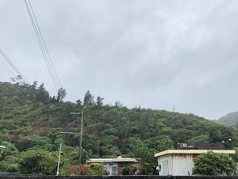
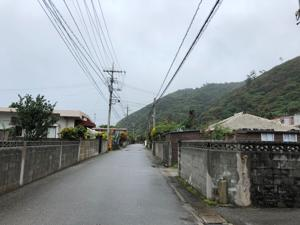
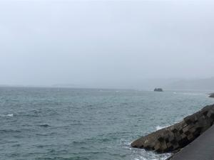
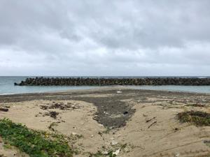

うるがいの話 ある日
最新: クリスマスイブの日【うるがいの話 ある日】とは 一日だけのプログです
『うるがいの話』の最新一日だけのプログで、通信料が少なく経済的だ。カニの画像をクリックすると全ての日付が載る『うるがいの話』サイトを表示します
|
|
【うるがいの話】 うるがい(ｳﾙｶﾞｲ urugai)とは、『もずくがに』の名前でとても大きくなります。 |
|---|---|
|
|
【カミマヤーの話】 猫のことを方言でマヤーといいます。カミマヤーとは、神の猫のことです。 |
|
【タナガーの話】 たながー（ﾀﾅｶﾞｰtanagaa）とは手長えびのことで、何種類かあり大きいのは車 エビぐらいになります。 |

|
【ぶながぁの話】 ぶながー(bunagaa)とは、赤い髪の毛、赤い身体、そして身長は１ｍ２０ｃｍ ぐらい、川の蟹を食べているの目撃された。場所は沖縄県国頭郡大宜味村のと ある村僕の隣近所に住んでいる爺さんから、聞いた話です。 |
|
|
【ギーマの話】 ギーマ(giima)とは、山原の里山に咲くスズランに似た、 花を付けます。実は食べられます、 気が付くと口の周りが紫になっています。 |
2021年12月24日 (金）クリスマスイブの日
16:18
   
ヨメの父親が森永の工場関係の事業をしていたとき、イブの日に販売促進のた
め、義父さんから頼まれてクリスマスアイスケーキを二十個以上、仕事を終え
た夜、森永の工場へケーキを取り車に乗せて、山原に向かった。注文は、商売
をしていた私の母親がとった。実家に着くと大きな業務用の冷蔵庫に入れた。
当日取る人もいたが、大半は翌日だったと思う。村では喜ばれていたようだが
私はケーキを送り届けると直ぐに家に戻った。遠い昔の話である。ちなみ、山
はジャングル、道はコンクリートの塀であるが、私が絵を描いたときは山の段
々畑で木など殆どなかったし、コンクリートの塀は、ハイビスカスの木で家を
囲っていたぜ（小浜島みたいに）。そして、海にはテトラポットは無かった。
こんな浜なんて、１０年前もなかったゼ。
１６時１０分 ビットコインの総資産 ￥１６、８７５